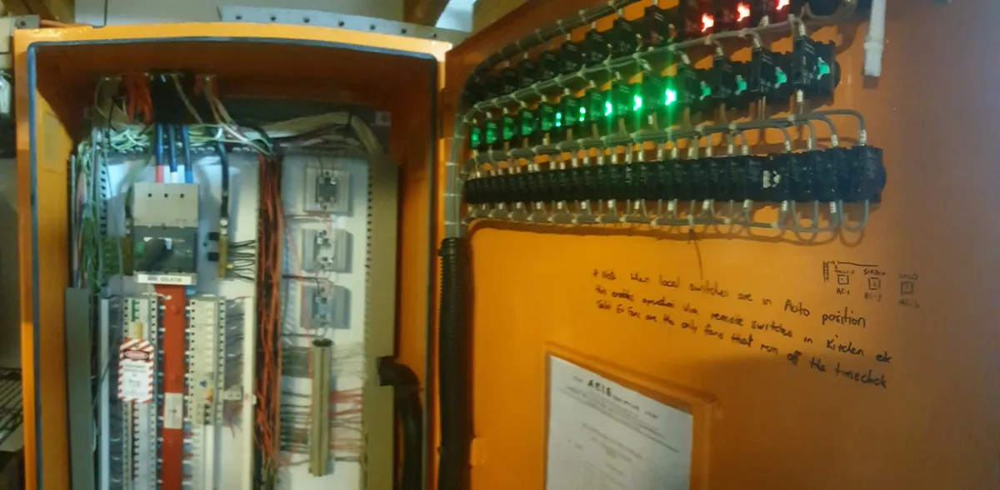

Industrial pump controls & electrical automation
When a pump will not start, a duty/standby system is behaving incorrectly, or a control panel has an intermittent alarm, replacing parts at random can make the fault harder to find. We investigate electrical supplies, motor protection, control circuits and associated automation.
This service is for the electrical and controls side of pumps and plant. Mechanical pump, pipework, hydraulic and specialist instrument faults may require another qualified technician.
Diagnose the control system, not just the motor
A pump fault can involve a supply, starter, protection device, level input, indication circuit, controller, sensor or communications link. Testing helps locate the actual failure.
Pump control panel fault finding
Investigate electrical panel supplies, protective devices, contactors, relays, terminals, control power and alarms.
Duty and standby operation
Electrical checks around alternating pumps, start/stop commands, run feedback and hand/auto selection.
Level controls and float circuits
Investigate float-switch inputs, level alarms and related electrical control wiring while separating process faults from electrical faults.
Motor starters and VSDs
Assess starters, overloads, isolators, drive fault indications and the electrical side of motor-control operation.
Telemetry and remote indication
Check the electrical signals, power, wiring and interface conditions relevant to reported indication or telemetry faults.
Switchboard alterations and upgrades
Discuss distribution, controls modifications and replacement equipment with isolation and site-operation constraints considered.
Real electrical work, not stock imagery.

See more work photographs in our project archive. We do not invent job locations or outcomes for archive photos.
What we check before the work starts.
Record the exact symptoms
Which pump is affected, what is the panel indicating, and does the fault occur in manual, auto or both modes?
Understand process constraints
A wastewater, stormwater or operational site may need bypass arrangements and safe shutdown coordination before testing.
Identify control hardware
Panel drawings, controller model, VSD make, contactor and relay labels and safe photos speed up investigation.
Electrical boundaries
PLC software, specialist telemetry systems and mechanical process repairs may need collaboration with the equipment provider.
Four practical steps.
Capture equipment and symptoms
Share the site, panel identification, pump numbers, alarms, history and safe photos of external labels.
Review access and isolation
Agree permits, shutdowns, risk controls, operational contacts and whether the equipment can be tested safely.
Fault-find systematically
Test the relevant electrical supply, protection, control signals and components rather than guessing at a controller or pump.
Repair or scope modifications
Complete practical authorised electrical work or document parts, specialist input and any staged upgrade required.
Common questions about industrial pump controls & automation.
Can you troubleshoot a pump panel that keeps alarming?
Yes, we can investigate electrical control circuits, supply, protection, indication and relevant inputs within the agreed scope.
Do you work with wastewater or stormwater pumps?
We can assess relevant electrical control and distribution systems at suitable sites, subject to access, safety and equipment requirements.
What about a pump that runs manually but not automatically?
That distinction is useful for diagnosis. The auto command, control power, inputs, relays and switching may need checking.
Can you troubleshoot VSD or motor starter faults?
We can examine relevant electrical supplies, drive indications, starters and associated controls, with specialist manufacturer support when needed.
Can you fix SCADA or remote telemetry?
We can troubleshoot relevant power, input/output wiring and interface issues. Proprietary telemetry programming or network-side work may require the system specialist.
What should I send to book an assessment?
Equipment model and panel details, the actual fault symptoms, a site contact and any shutdown or induction requirements.
Related electrical services.
Industrial Electrical
Explore related electrical services and suitable enquiry options.
Explore service →Electrical Fault Finding
Explore related electrical services and suitable enquiry options.
Explore service →Commercial Electrical Maintenance
Explore related electrical services and suitable enquiry options.
Explore service →Byron Bay and nearby Northern Rivers.
We discuss electrical enquiries across the local area, according to the work, access, travel and availability.
Tell us the job details.
Send the location, work description, site contact and safe photographs if available. For an urgent electrical danger, call directly.